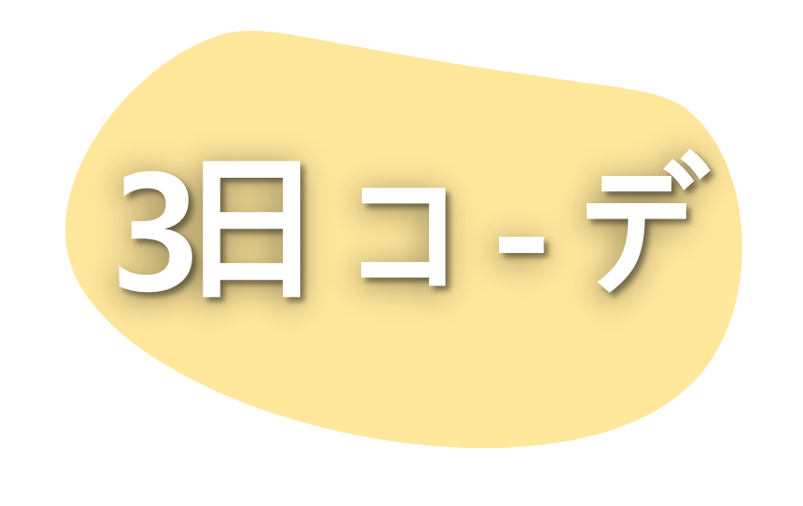
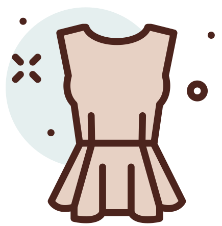
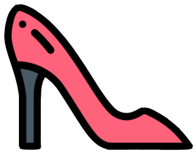
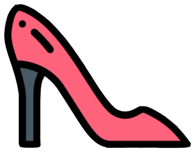

THU: Casual A

다리가 길어 보이는 코디로 하이웨이스트 바지와
크롭 블라우스를 준비했습니다.
블라우스는 랩 형식으로 직접 멋있는 연출을 할 수 있습니다.
하지만 가슴 부분이 깊게 파여있어
편한 활동을 대비해 숄더 탑을 준비했습니다.
옷의 전체적인 색이 남색과 조화롭게 잘 어울리는 색이면서
코디의 포인가 될 수 있는 빨간빛으로 힐을 준비했습니다.
앞코가 사각으로 되어 있어 착용감이 편하며
스트랩형식으로 되어있어 무더운 여름 시원하게 신을 수 있습니다.
이번 코디의 포인트인 신발을 돋보이게 해주기 위해
무난한 검은색 작은 가방을 매치해 두루두루 잘 어울리게 해줬습니다.

1. 플로랄 프린트 크로스 탑
￦39,000
 2. JEANS Z1975 HIGH RISE FULL LENGTH
2. JEANS Z1975 HIGH RISE FULL LENGTH
￦49,000
 3. 리브드 오프 숄더 탑
3. 리브드 오프 숄더 탑
￦10 ,000
 4. 미니 레더 버킷
4. 미니 레더 버킷
￦79,000
 5. 러버솔 스트랩 샌들
￦109,000
￦39,000
￦49,000
￦10 ,000
￦79,000
 5. 러버솔 스트랩 샌들
￦109,000